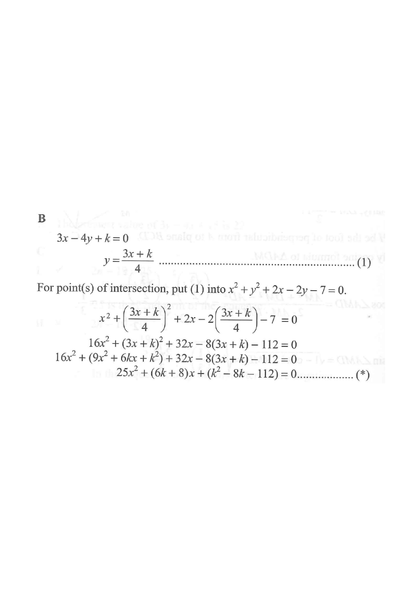

HKDSE Math 2013 · Paper 2 · Q42 — Coordinate Geometry
Circle $C$ (centre $P$)Line $3x-4y+k=0$Centre $P(-1,1)$Tangent points (extreme $k$)Radius $r=3$
[2013 MC #42]
Find the range of values of $k$ such that the circle
$$x^{2}+y^{2}+2x-2y-7=0$$
and the straight line
$$3x-4y+k=0$$
intersect.
A. $-8
B. $\mathbf{-8\le k\le 22}$
C. $k<-22$ or $k>8$
D. $k\le-22$ or $k\ge 8$

Figure (original exam diagram)
Step 1 · Find the centre and radius of the circle
Complete the square:
$$x^{2}+y^{2}+2x-2y-7=0$$
$$(x+1)^{2}-1+(y-1)^{2}-1-7=0$$
$$(x+1)^{2}+(y-1)^{2}=9$$
So the centre is $P(-1,\,1)$ and the radius is $r=3$.
💡 The line can be drawn in different positions by changing $k$ — watch the sliding red line in the diagram.
Completing the Square\(x^{2}+y^{2}+Dx+Ey+F=0\;\Longrightarrow\;{\left(x+\dfrac{D}{2}\right)}^{2}+{\left(y+\dfrac{E}{2}\right)}^{2}=\dfrac{D^{2}+E^{2}}{4}-F\)With \(D=2\), \(E=-2\), \(F=-7\) this gives the centre \((-1,1)\) and \(r^{2}=9\).
Step 2 · Distance from the centre to the line
For the line $3x-4y+k=0$, the distance from $P(-1,1)$ is
This is exactly the purple dashed segment shown in the diagram.
Perpendicular Distance from a Point to a Line\(d=\dfrac{Ax_{0}+By_{0}+C}{\sqrt{A^{2}+B^{2}}}\)For \(P(-1,1)\) and \(3x-4y+k=0\) this gives \(\dfrac{k-7}{5}\); when \(k<7\) that value is negative, so the distance is its opposite \(\dfrac{7-k}{5}\).
Step 3 · Condition for intersection
Circle and line intersect (touch or cross) $\iff$ distance $\le$ radius:
$$-3\le\frac{k-7}{5}\le 3$$
$$-15\le k-7\le 15$$
Condition for a Line to Meet a Circle\(d\le r\;\Longleftrightarrow\;\text{the line cuts or touches the circle}\)The distance must not exceed the radius \(3\), i.e. \(-3\le\dfrac{k-7}{5}\le 3\).
Step 4 · Solve the inequality
$$-15\le k-7\le 15$$
$$-8\le k\le 22$$
At the endpoints the line is tangent to the circle (exactly one intersection), which still counts as intersecting — hence "$\le$".
ANSWER$\;-8\le k\le 22\;$ → choice B
🔁 Alternative (algebraic): substitute $y=\frac{3x+k}{4}$ into the circle, then require the resulting quadratic in $x$ to have $\Delta\ge 0$: $$25x^{2}+(6k+8)x+(k^{2}-8k-112)=0$$ $$\Delta=(k+8)(k-22)\cdot(-64)\ge 0\;\Rightarrow\;-8\le k\le 22.$$
Try the slider in the diagram panel: pull $k$ past $-8$ or $22$ and the line no longer meets the circle.
PRACTICESimilar question — try it yourself
Question. Find the range of values of \(k\) such that the circle \(x^{2}+y^{2}+4x-6y-12=0\) and the straight line \(5x-12y+k=0\) intersect. [1 mark]
Show the worked solution
Step 1. Complete the square: \(x^{2}+4x+y^{2}-6y=12\), so \((x+2)^{2}-4+(y-3)^{2}-9=12\) and \((x+2)^{2}+(y-3)^{2}=25\). The centre is \((-2,3)\) and the radius is \(r=5\).
Step 2. Distance from \((-2,3)\) to \(5x-12y+k=0\): \(d=\dfrac{5(-2)-12(3)+k}{13}=\dfrac{k-46}{13}\) (its opposite when \(k<46\)).
Step 3. The line meets the circle when \(d\le r\): \(-5\le\dfrac{k-46}{13}\le 5\), i.e. \(-65\le k-46\le 65\).
Step 4. Hence \(-65\le k-46\le 65\), giving \(-19\le k\le 111\). At \(k=-19\) and \(k=111\) the line is a tangent, which still counts as intersecting.